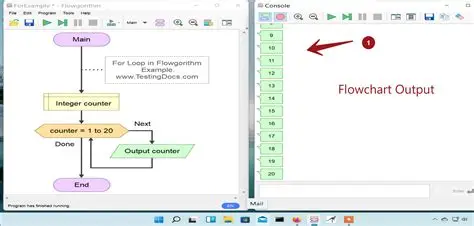

Categorie: loops, functies en data processing.| Gepubliceerd: november 2025
Beschrijving
Loops (herhalingen) Je leert for-loops en while-loops gebruiken om taken meerdere keren uit te voeren.Voorbeeld: alle getallen van 1 tot 10 printen zonder ze één voor één te typen. 
functies (- Je leert functies schrijven om je code overzichtelijk en herbruikbaar te maken.Voorbeeld: een functie die checkt of een getal even is.)
Data processing (gegevens verwerken) Je leert lijsten, dictionaries, bestanden en tabellen verwerken. Denk aan: data inlezen, filteren, berekenen, opslaan.